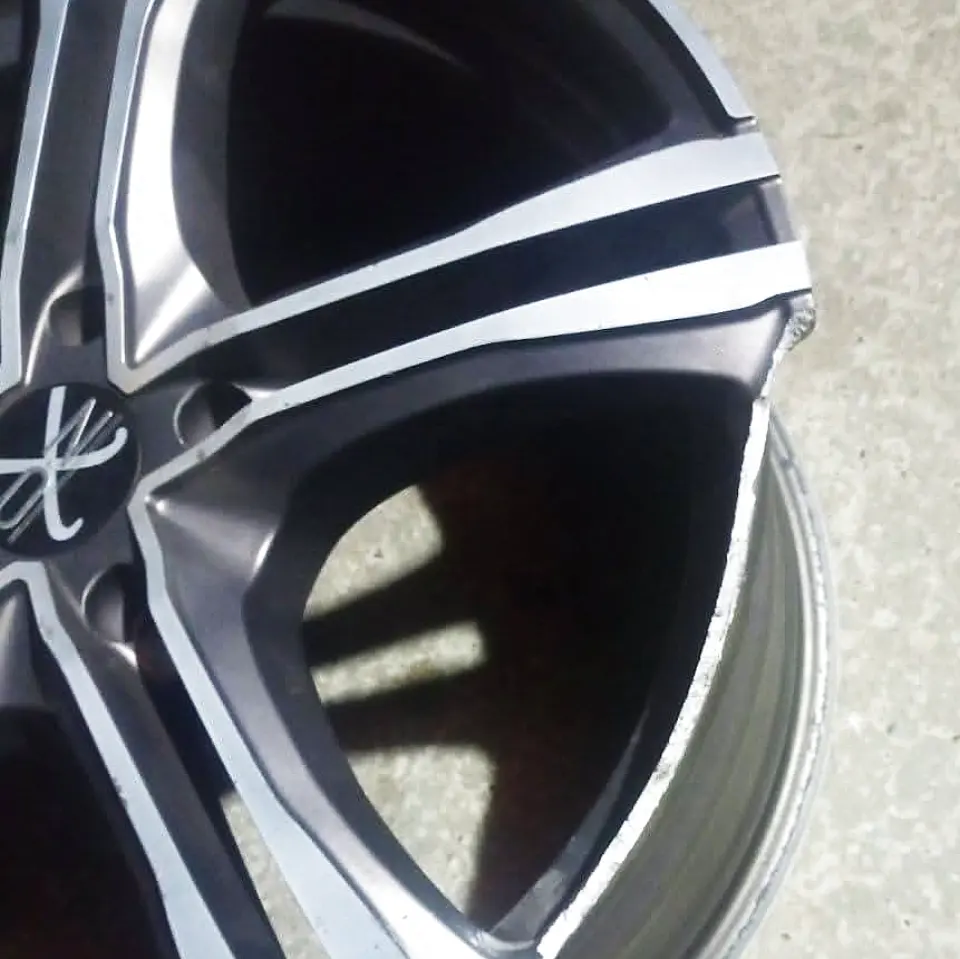
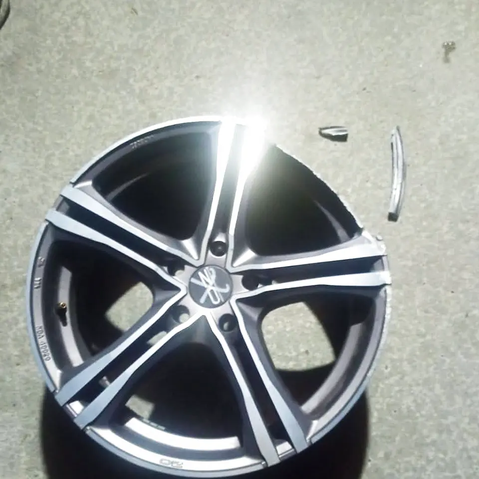
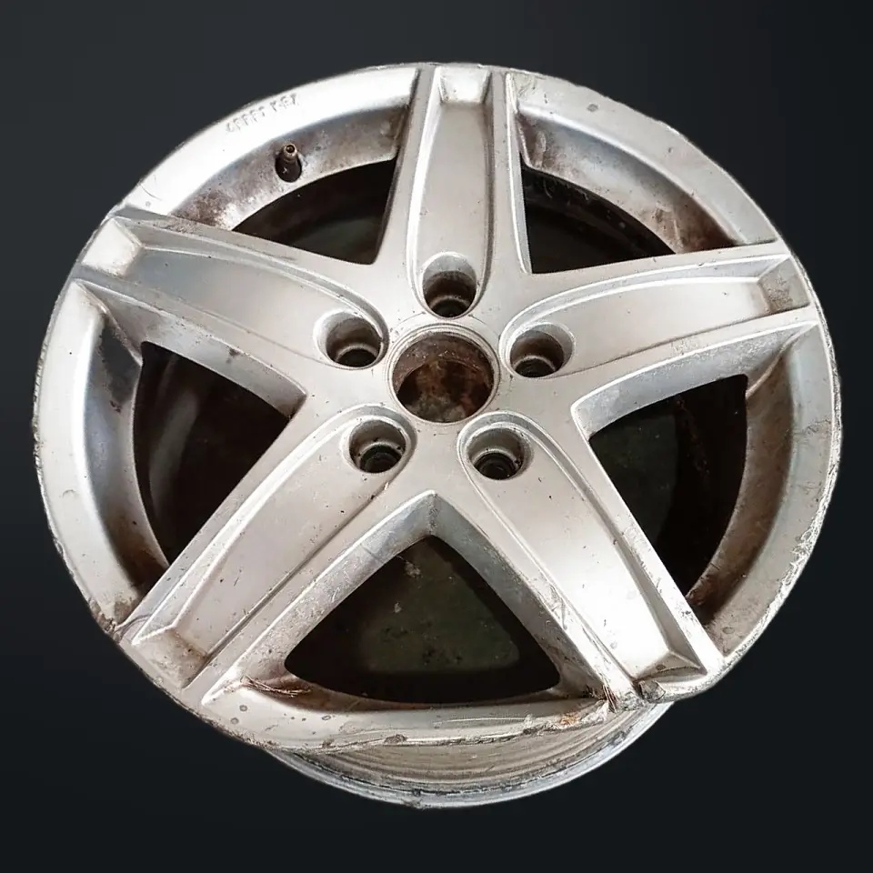
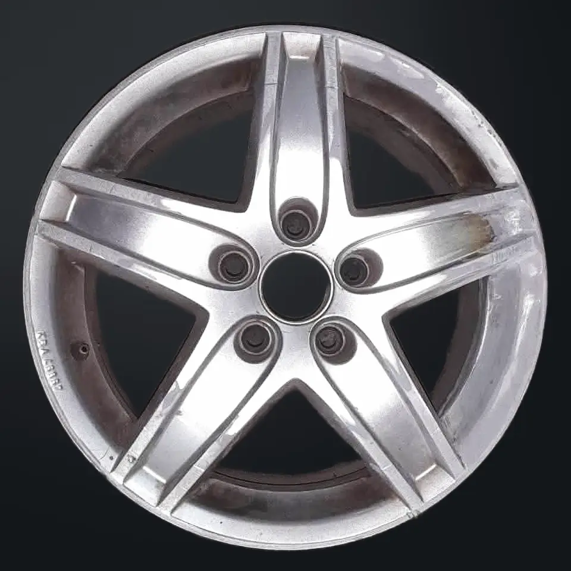
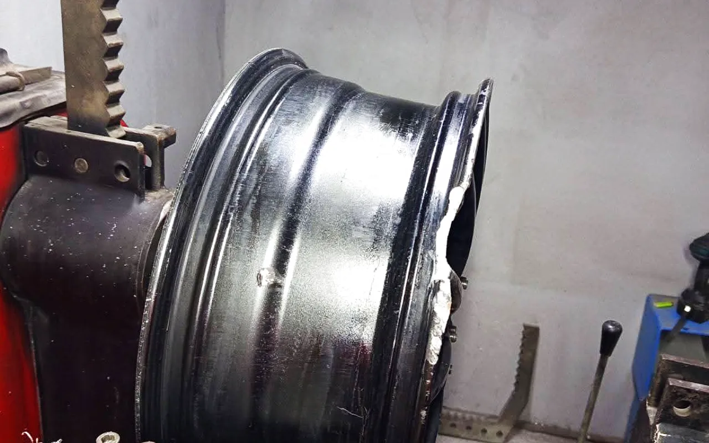
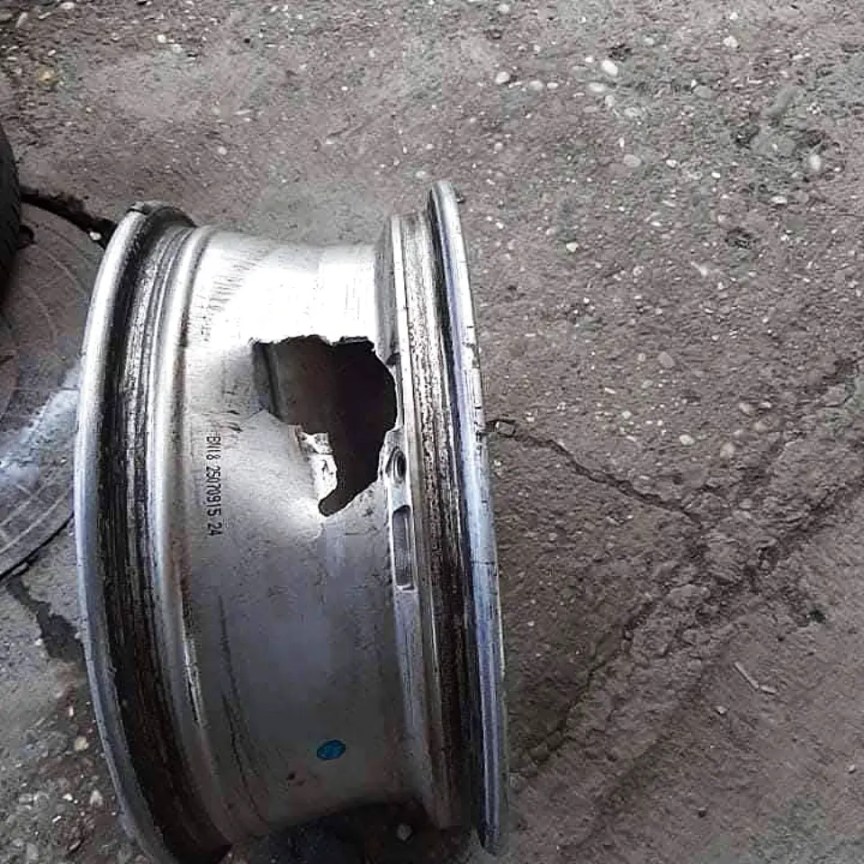
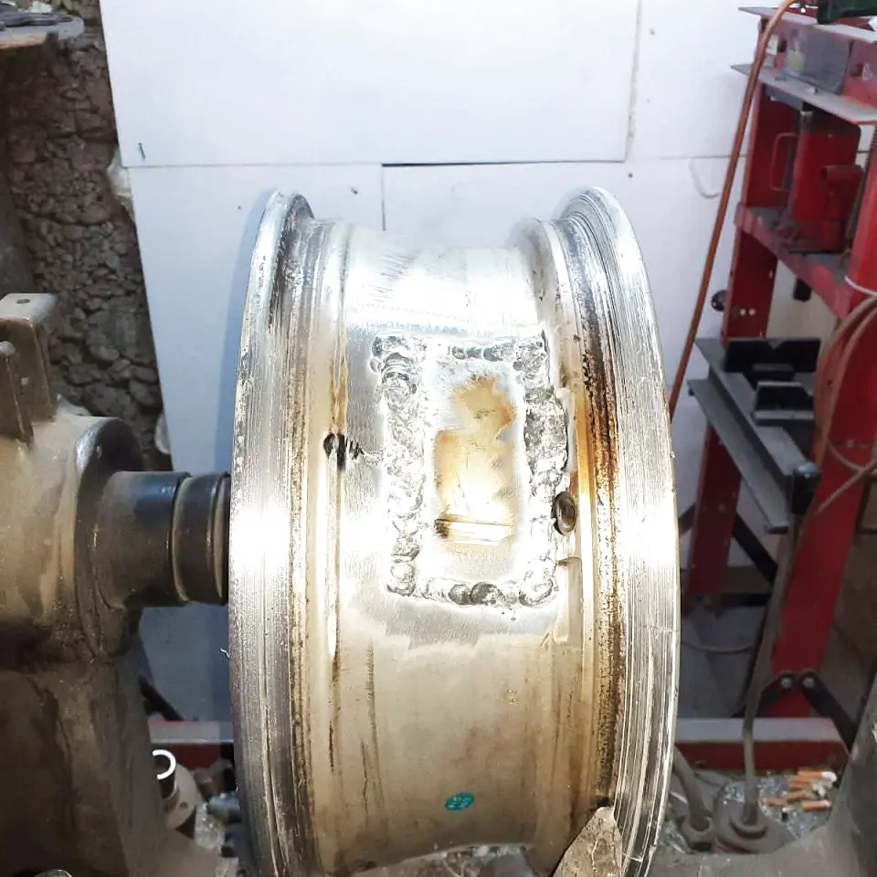
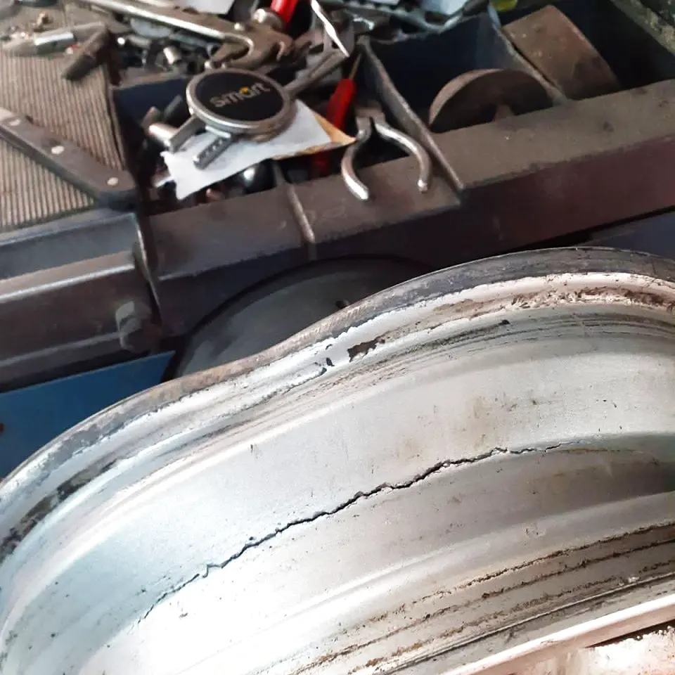
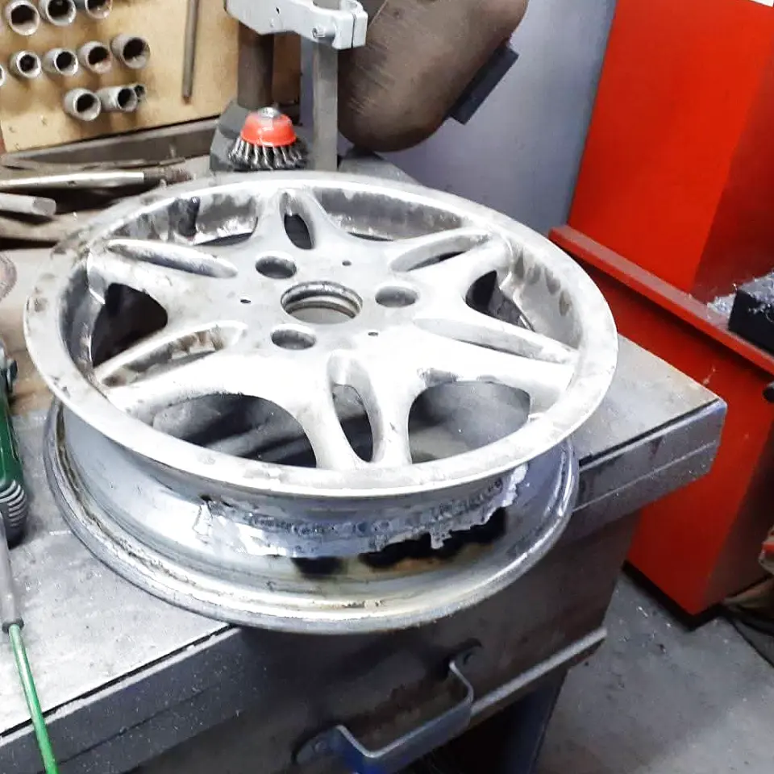

ALLOY WHEEL SERVICE · TUZLA
Welding cracks and straightening bent wheels, aluminium as well as steel, all in our own workshop in Tuzla.
Aluminium and steel wheels are both handled here.
Scroll on


THE WORKSHOP
Most wheels that arrive here look worse than they are. A kerbed edge, a crack beside the bead seat, a hole that lets the tyre lose air overnight, or a rim that a pothole has pulled out of round: these are everyday jobs, on aluminium as much as on steel.
Two things get done here, and both of them get done properly: welding and straightening. The press, the welder and the grinder stand in the same room, so the wheel never passes from hand to hand before the job is finished. Eldin Vejo runs the workshop, and he is the person you discuss the job with.

SERVICES
Two services, both taken all the way: the crack is welded shut, the bent rim is pressed back into a true circle.
Cracks, breaks, holes in the bead seat and missing chunks of metal. The area is welded through its full thickness and machined back to the wheel's original line.
Read about this serviceA wheel that hops, shakes the steering or has gone oval after a pothole is pressed back into a true circle in small stages, with the metal checked as it goes.
Read about this serviceHOW IT GOES
Five stages every wheel goes through once you leave it with us, from the first message to the moment you collect it.
Take a close shot of the damage and one of the whole wheel, then send them to +387 61 570 429 on WhatsApp or Viber. You get a first assessment from the picture.
Once the wheel is here the tyre comes off and the inside face is checked too. Only then does the true depth of the damage show, and whether a safe repair is possible.
Distorted areas go back under the press, cracks and holes are closed with weld, and a missing piece of metal is built up again over several passes.
The weld is taken down with the grinder, step by step, until it lines up with the metal around it. The bead seat is worked back far enough for the tyre to sit on an even surface all the way round.
Before handover the wheel turns on the machine one more time and the remaining runout is read off. If the line sits quiet the wheel is done; if not, it goes back under the press.
BEFORE AND AFTER
Drag the ring across the photograph and see how much of a damaged wheel really comes back to its original shape.






QUICK ASSESSMENT
Pick three answers and you get a finished WhatsApp message, so you do not have to type anything yourself.
THE MACHINES
The straightening press, the welder and the grinder, all at one address in Tuzla.
WHY SLOGA
A repair makes sense when the wheel can be brought back to a state that is safe to drive on. When it cannot, we say so out loud.
A repaired wheel keeps its own shape and bolt pattern, so there is no hunting for a matching set and no surprises when it goes back on the car.
If the damage sits in the wheel disc or at the root of a spoke and cannot be put right safely, the wheel is neither welded nor straightened. You hear that straight away, without any dancing around it.
Aluminium and steel wheels both go through the same workshop. There is no need to look for a second address for the steel rims off a van or a winter set.
The job does not end at the weld. The wheel spins on the machine and the remaining runout is read off, because only in rotation does it show whether it really runs quiet.
Locations
Every town page sets out what usually happens to wheels on the roads there and how a trip to Tuzla is most easily arranged.
QUESTIONS
Short answers to the questions that come in by phone before the wheels even reach the workshop.
In most cases yes. If the edge is only pushed in it comes back under the press; if metal is missing, the spot is welded up and the excess ground back until the line of the edge returns. Before any of that the tyre comes off, because only the inside face shows whether the impact went deeper.
The usual sign is a vibration in the steering wheel or the seat that grows with speed. A tyre that loses air slowly without a visible puncture also points to a bent or cracked bead seat. You only know for sure once the wheel turns on the machine and the runout can be read off.
One photograph of the whole wheel and two or three close-ups of the damage, in daylight if you can. Write how many wheels are affected and the diameter in inches if you know it. The number is +387 61 570 429, the same for WhatsApp and for Viber.
Yes. Steel wheels are straightened and welded just like alloys, they simply behave differently under pressure. On vans and winter sets it is a common repair, because the existing set can be kept instead of hunting down a new one.
No. The tyre comes off here and goes back on once the wheel is done, because that is part of the repair. What is not on offer is tyre work on its own: just fitting, swapping the set for the season or balancing alone.
From one wheel up to a full set of four. For a single rim a call and an agreed time is enough. For a whole set get in touch earlier, so the day the car stands without its wheels can be arranged.
The address is 3. tuzlanske brigade 128, in the Simin Han part of Tuzla. There is a navigation button on this site that opens a route to the entrance. If you lose your way on the approach, call +387 61 570 429 and you get directions.
Work is done by arrangement. The best way is to call or send a message, describe what is damaged, and then agree a day to bring the wheels in. That way the machine is free when you arrive and the job can start straight away.
They mean the same thing in everyday use. Strictly speaking the rim is the outer band the tyre seals against and the wheel is the whole part, but people search for both. Whether you write rim repair, alloy wheel repair or wheel straightening, the work described here is what you are looking for.
Describe in two sentences what happened and attach a photo of the wheel. You get an assessment and a suggested time.